Juyong Kim
Ph.D. Candidate
Machine Learning Department
Carnegie Mellon University
Advisor: Pradeep Ravikumar, Jeremy C. Weiss
M.S. in Computer Science and Engineering (Advisor: Gunhee Kim)
B.S. in Electrical and Computer Engineering
Seoul National University
CV / Google Scholar / GitHub / LinkedIn
Email : juyongk at andrew.cmu.edu
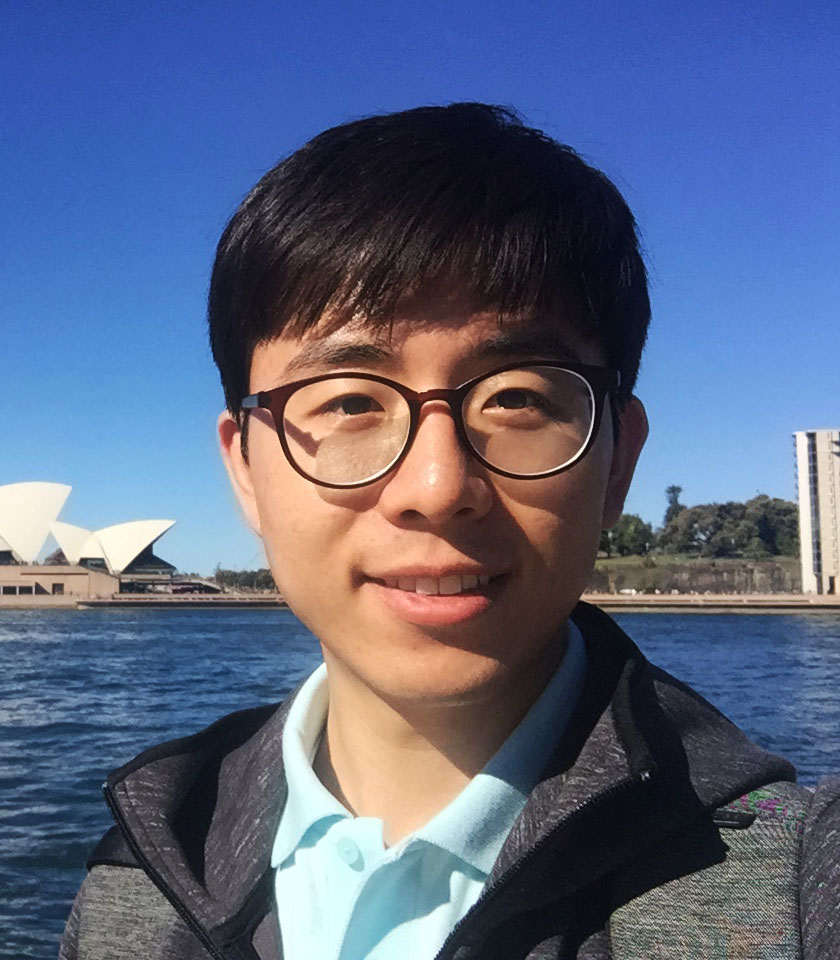
Research Interests : Clinical Natural Language Processing, Tabular Data Learning, Computer Vision, Deep Learning Architectures, Machine Learning
[NEWS] I’m actively seeking research scientist/engineer roles in NLP, CV, and foundation models.
Research Experience
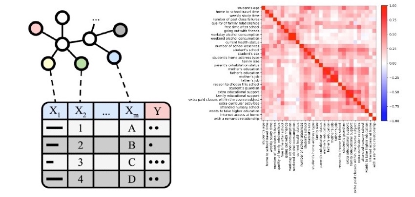
Knowledge-Enriched Machine Learning for Tabular Data
Juyong Kim, Chandler Squires, and Pradeep Ravikumar
International Conference on Neuro-symbolic Systems (NeuS), 2025. (Oral Presentation) paper / project
Juyong Kim, Chandler Squires, and Pradeep Ravikumar
International Conference on Neuro-symbolic Systems (NeuS), 2025. (Oral Presentation) paper / project

WHAM: Reconstructing World-grounded Humans with Accurate 3D Motion
Soyong Shin, Juyong Kim, Eni Halilaj, and Michael J. Black
Proceedings of the IEEE/CVF Conference on Computer Vision and Pattern Recognition (CVPR), 2024. paper / project
Soyong Shin, Juyong Kim, Eni Halilaj, and Michael J. Black
Proceedings of the IEEE/CVF Conference on Computer Vision and Pattern Recognition (CVPR), 2024. paper / project
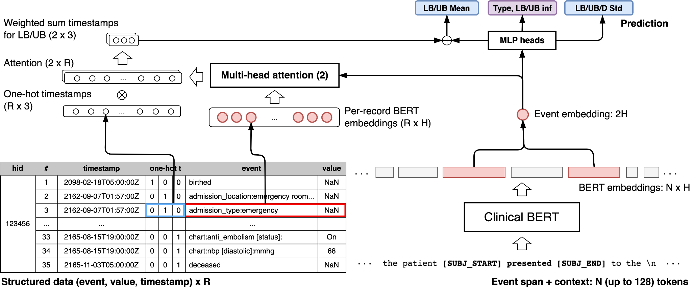
Using Multimodal Data to Improve Precision of Inpatient Event Timelines
Juyong Kim, Gabriel Frattalone-Llado, Cheng Cheng, Diego Salazar, Smitha Edakalavan, and Jeremy C. Weiss
Pacific-Asia Conference on Knowledge Discovery and Data Mining (PAKDD), 2024. paper / project
Juyong Kim, Gabriel Frattalone-Llado, Cheng Cheng, Diego Salazar, Smitha Edakalavan, and Jeremy C. Weiss
Pacific-Asia Conference on Knowledge Discovery and Data Mining (PAKDD), 2024. paper / project
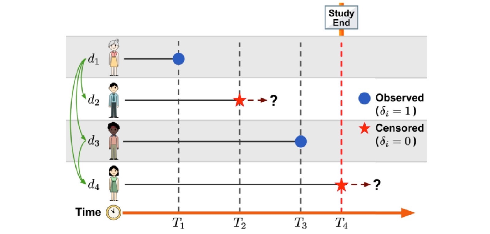
Individual Fairness under Uncertainty
Wenbin Zhang, Zichong Wang, Juyong Kim, Cheng Cheng, Thomas Oommen, Pradeep Ravikumar, and Jeremy C. Weiss
European Conference on Artificial Intelligence (ECAI), 2023. paper / project
Wenbin Zhang, Zichong Wang, Juyong Kim, Cheng Cheng, Thomas Oommen, Pradeep Ravikumar, and Jeremy C. Weiss
European Conference on Artificial Intelligence (ECAI), 2023. paper / project
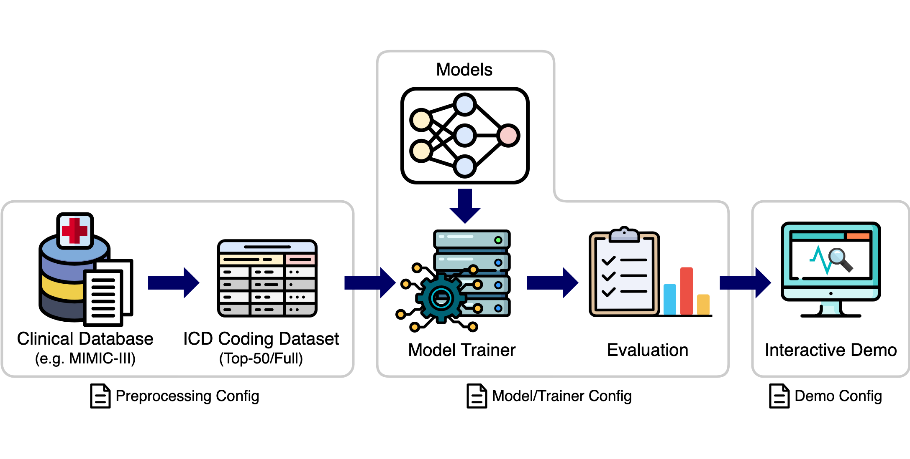
AnEMIC: A Framework for Benchmarking ICD Coding Models
Juyong Kim, Abheesht Sharma, Suhas Shanbhogue, and Pradeep Ravikumar, and Jeremy C. Weiss
Conference on Empirical Methods in Natural Language Processing (EMNLP, System Demonstrations), 2022. paper / project
Juyong Kim, Abheesht Sharma, Suhas Shanbhogue, and Pradeep Ravikumar, and Jeremy C. Weiss
Conference on Empirical Methods in Natural Language Processing (EMNLP, System Demonstrations), 2022. paper / project
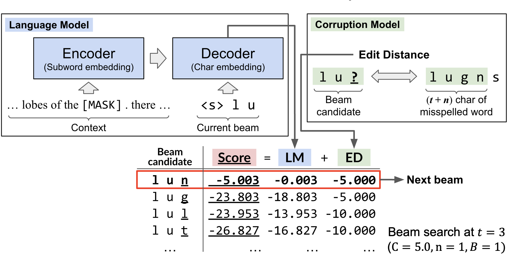
Context-Sensitive Spelling Correction of Clinical Text via Conditional Independence
Juyong Kim, Jeremy C. Weiss, and Pradeep Ravikumar
Conference on Health, Inference, and Learning (CHIL), 2022. paper / project
Juyong Kim, Jeremy C. Weiss, and Pradeep Ravikumar
Conference on Health, Inference, and Learning (CHIL), 2022. paper / project
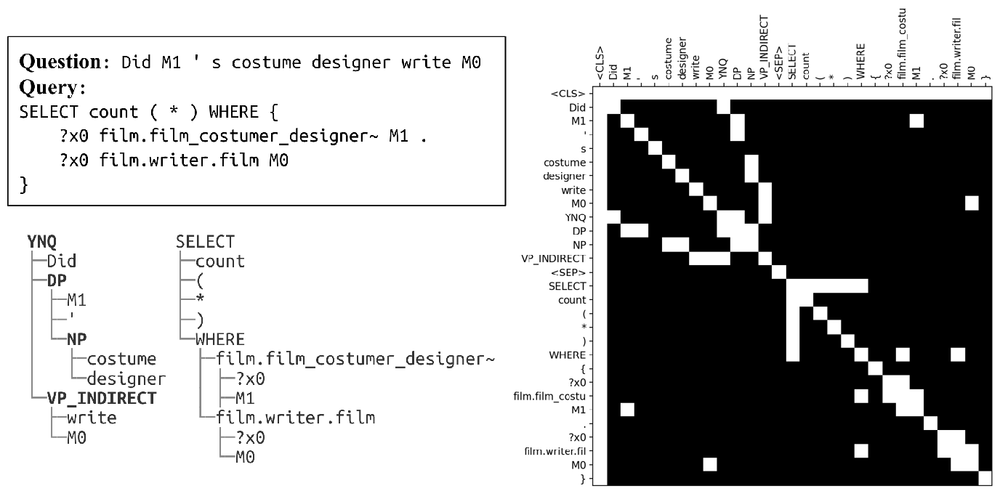
Improving Compositional Generalization in Classification Tasks via Structure Annotations
Juyong Kim, Pradeep Ravikumar, Joshua Ainslie, and Santiago Ontañón
Proceedings of the Association for Computational Linguistics (ACL, Short Paper), 2021. paper / project
Juyong Kim, Pradeep Ravikumar, Joshua Ainslie, and Santiago Ontañón
Proceedings of the Association for Computational Linguistics (ACL, Short Paper), 2021. paper / project
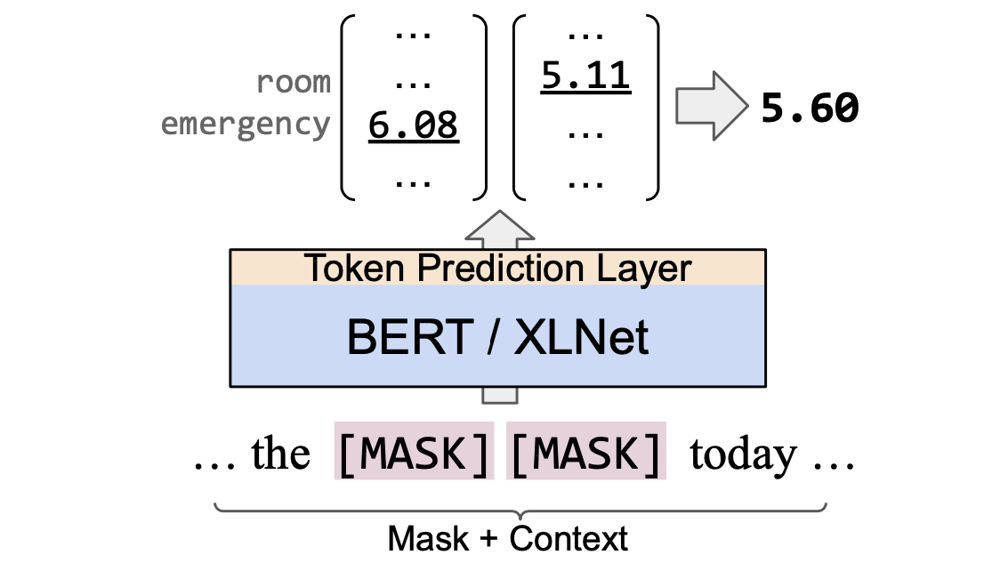
Improved Clinical Abbreviation Expansion via Non-Sense-Based Approaches
Juyong Kim, Linyuan Gong, Justin Khim, Jeremy C. Weiss, and Pradeep Ravikumar
Machine Learning for Health (ML4H) NeurIPS Workshop, 2020. paper / project
Juyong Kim, Linyuan Gong, Justin Khim, Jeremy C. Weiss, and Pradeep Ravikumar
Machine Learning for Health (ML4H) NeurIPS Workshop, 2020. paper / project
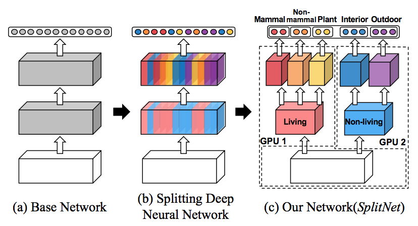
SplitNet: Learning to Semantically Split Deep Networks for Parameter Reduction and Model Parallelization
Juyong Kim, Yookoon Park, Gunhee Kim, and Sung Ju Hwang
International Conference on Machine Learning (ICML), 2017. paper / project
Juyong Kim, Yookoon Park, Gunhee Kim, and Sung Ju Hwang
International Conference on Machine Learning (ICML), 2017. paper / project
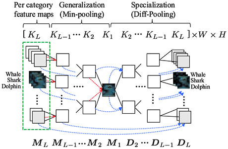
Taxonomy-Regularized Semantic Deep Convolutional Neural Networks
Wonjoon Goo, Juyong Kim, Gunhee Kim, and Sung Ju Hwang
European Conference on Computer Vision (ECCV), 2016. paper / project
Wonjoon Goo, Juyong Kim, Gunhee Kim, and Sung Ju Hwang
European Conference on Computer Vision (ECCV), 2016. paper / project
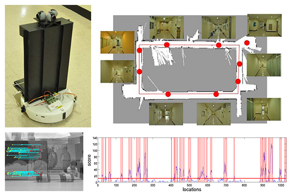
Actionable Topological Mapping for Navigation Using Nearby Objects
Junyoung Kim, Juyong Kim, Seungil You, Yoonseon Oh, Songhwai Oh
IEEE International Conference on Automation Science and Engineering (CASE), 2012. paper / video
Junyoung Kim, Juyong Kim, Seungil You, Yoonseon Oh, Songhwai Oh
IEEE International Conference on Automation Science and Engineering (CASE), 2012. paper / video
Honors and Awards
ILJU Overseas Ph.D. scholarship
Funded by ILJU Academy and Culture Foundation
Supporting outstanding PhD students studying abroad (Aug. 2018 - May. 2022)
Funded by ILJU Academy and Culture Foundation
Supporting outstanding PhD students studying abroad (Aug. 2018 - May. 2022)
Hyundai Motor Chung Mong-Goo Scholarship
Funded by Hyundai Motor Chung Mong-Goo Foundation
Full tuition & fees during my Master’s degree program (Mar. 2016 - Feb. 2018)
Funded by Hyundai Motor Chung Mong-Goo Foundation
Full tuition & fees during my Master’s degree program (Mar. 2016 - Feb. 2018)
Silver Prize in 25th Global Software Contest Exhibit
Hosted by Ministry of Science ICT and Future Planning, Korea
Mobile Voting Service (MVS - Korean)
Hosted by Ministry of Science ICT and Future Planning, Korea
Mobile Voting Service (MVS - Korean)
National Science and Engineering Scholarship
Funded by Korea Student Aid Foundation
Full tuition & fees during my college (Mar. 2008 – Feb. 2015)
Funded by Korea Student Aid Foundation
Full tuition & fees during my college (Mar. 2008 – Feb. 2015)